| Matrix name | Aligned logos | cor |
Ncor |
logoDP |
NIcor |
NsEucl |
SSD |
NSW |
rcor |
rNcor |
rlogoDP |
rNIcor |
rNsEucl |
rSSD |
rNSW |
rank_mean |
match_rank |
Aligned matrices |
|---|
| positions_8nt_m5_shift7 (positions_8nt_m5) |
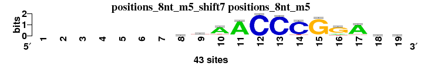 |
|
|
|
|
|
|
|
|
|
|
|
|
|
|
|
|
; positions_8nt_m5; m=0 (reference); ncol1=12; shift=7; ncol=19; -------dtAACCCGGAtg
; Alignment reference
a 0 0 0 0 0 0 0 13 6 33 39 0 1 1 1 7 36 9 9
c 0 0 0 0 0 0 0 6 7 2 2 43 42 38 0 0 2 8 8
g 0 0 0 0 0 0 0 12 8 3 1 0 0 0 41 31 2 10 18
t 0 0 0 0 0 0 0 12 22 5 1 0 0 4 1 5 3 16 8
|
| 5241_ELF1_full_HumanTF_1.0__shift9 (5241_ELF1_full_HumanTF_1.0_) |
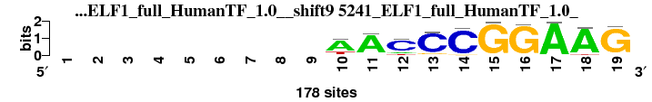 |
0.875 |
0.625 |
6.444 |
0.593 |
0.918 |
1.356 |
0.932 |
8 |
4 |
6 |
4 |
6 |
14 |
10 |
7.429 |
1 |
; positions_8nt_m5 versus 5241_ELF1_full_HumanTF_1.0_; m=1/37; ncol2=12; w=10; offset=2; strand=D; shift=9; score= 7.4286; ---------AACCCGGAAG
; cor=0.875; Ncor=0.625; logoDP=6.444; NIcor=0.593; NsEucl=0.918; SSD=1.356; NSW=0.932; rcor=8; rNcor=4; rlogoDP=6; rNIcor=4; rNsEucl=6; rSSD=14; rNSW=10; rank_mean=7.429; match_rank=1
a 0 0 0 0 0 0 0 0 0 95 113 16 5 0 1 0 117 119 10
c 0 0 0 0 0 0 0 0 0 5 6 97 115 117 0 0 0 0 0
g 0 0 0 0 0 0 0 0 0 1 4 0 11 6 174 173 0 1 167
t 0 0 0 0 0 0 0 0 0 30 6 16 0 2 0 5 1 7 0
|
| 5801_SPDEF_DBD_1_HumanTF_1.0__shift10 (5801_SPDEF_DBD_1_HumanTF_1.0_) |
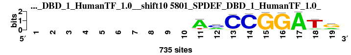 |
0.896 |
0.576 |
6.197 |
0.552 |
0.923 |
0.957 |
0.947 |
6 |
11 |
10 |
9 |
3 |
10 |
4 |
7.571 |
2 |
; positions_8nt_m5 versus 5801_SPDEF_DBD_1_HumanTF_1.0_; m=2/37; ncol2=11; w=9; offset=3; strand=D; shift=10; score= 7.5714; ----------AmCCGGATg
; cor=0.896; Ncor=0.576; logoDP=6.197; NIcor=0.552; NsEucl=0.923; SSD=0.957; NSW=0.947; rcor=6; rNcor=11; rlogoDP=10; rNIcor=9; rNsEucl=3; rSSD=10; rNSW=4; rank_mean=7.571; match_rank=2
a 0 0 0 0 0 0 0 0 0 0 498 214 2 21 0 10 498 77 158
c 0 0 0 0 0 0 0 0 0 0 10 284 498 498 5 0 0 21 40
g 0 0 0 0 0 0 0 0 0 0 10 37 22 0 498 498 1 7 498
t 0 0 0 0 0 0 0 0 0 0 92 13 0 0 0 0 1 498 39
|
| 2542_MA0280.1_JASPAR_CORE_2009__shift12 (2542_MA0280.1_JASPAR_CORE_2009_) |
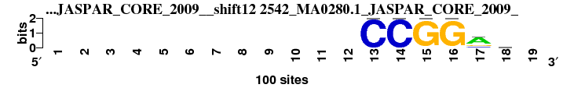 |
0.962 |
0.481 |
5.286 |
0.476 |
0.941 |
0.253 |
0.979 |
1 |
21 |
14 |
16 |
1 |
1 |
1 |
7.857 |
3 |
; positions_8nt_m5 versus 2542_MA0280.1_JASPAR_CORE_2009_; m=3/37; ncol2=6; w=6; offset=5; strand=D; shift=12; score= 7.8571; ------------CCGGar-
; cor=0.962; Ncor=0.481; logoDP=5.286; NIcor=0.476; NsEucl=0.941; SSD=0.253; NSW=0.979; rcor=1; rNcor=21; rlogoDP=14; rNIcor=16; rNsEucl=1; rSSD=1; rNSW=1; rank_mean=7.857; match_rank=3
a 0 0 0 0 0 0 0 0 0 0 0 0 0 0 0 0 66 32 0
c 0 0 0 0 0 0 0 0 0 0 0 0 100 100 0 0 13 18 0
g 0 0 0 0 0 0 0 0 0 0 0 0 0 0 100 100 21 28 0
t 0 0 0 0 0 0 0 0 0 0 0 0 0 0 0 0 0 22 0
|
| 5804_SPDEF_full_1_HumanTF_1.0__shift10 (5804_SPDEF_full_1_HumanTF_1.0_) |
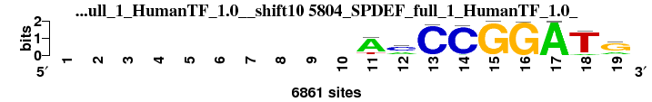 |
0.890 |
0.572 |
6.290 |
0.545 |
0.920 |
1.030 |
0.943 |
7 |
13 |
8 |
11 |
4 |
11 |
7 |
8.714 |
4 |
; positions_8nt_m5 versus 5804_SPDEF_full_1_HumanTF_1.0_; m=4/37; ncol2=11; w=9; offset=3; strand=D; shift=10; score= 8.7143; ----------AmCCGGATg
; cor=0.890; Ncor=0.572; logoDP=6.290; NIcor=0.545; NsEucl=0.920; SSD=1.030; NSW=0.943; rcor=7; rNcor=13; rlogoDP=8; rNIcor=11; rNsEucl=4; rSSD=11; rNSW=7; rank_mean=8.714; match_rank=4
a 0 0 0 0 0 0 0 0 0 0 4628 1890 52 237 2 6 4628 532 1566
c 0 0 0 0 0 0 0 0 0 0 101 2737 4628 4628 2 0 0 69 601
g 0 0 0 0 0 0 0 0 0 0 176 536 92 1 4628 4628 6 11 4628
t 0 0 0 0 0 0 0 0 0 0 912 77 0 1 0 8 2 4628 66
|
| 6044_1dux_F_3D-footprint_20130124__shift12 (6044_1dux_F_3D-footprint_20130124_) |
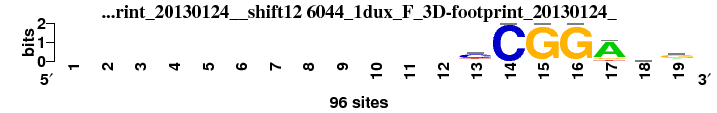 |
0.932 |
0.544 |
3.997 |
0.523 |
0.936 |
0.399 |
0.972 |
2 |
18 |
25 |
13 |
2 |
2 |
2 |
9.143 |
5 |
; positions_8nt_m5 versus 6044_1dux_F_3D-footprint_20130124_; m=5/37; ncol2=7; w=7; offset=5; strand=D; shift=12; score= 9.1429; ------------cCGGAng
; cor=0.932; Ncor=0.544; logoDP=3.997; NIcor=0.523; NsEucl=0.936; SSD=0.399; NSW=0.972; rcor=2; rNcor=18; rlogoDP=25; rNIcor=13; rNsEucl=2; rSSD=2; rNSW=2; rank_mean=9.143; match_rank=5
a 0 0 0 0 0 0 0 0 0 0 0 0 9 0 0 0 78 24 19
c 0 0 0 0 0 0 0 0 0 0 0 0 59 96 0 0 0 24 11
g 0 0 0 0 0 0 0 0 0 0 0 0 9 0 96 96 9 24 57
t 0 0 0 0 0 0 0 0 0 0 0 0 19 0 0 0 9 24 9
|
| 5240_ELF1_DBD_HumanTF_1.0__shift9 (5240_ELF1_DBD_HumanTF_1.0_) |
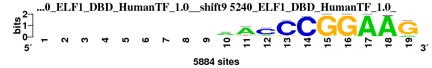 |
0.861 |
0.615 |
6.286 |
0.579 |
0.915 |
1.441 |
0.928 |
9 |
5 |
9 |
5 |
10 |
15 |
11 |
9.143 |
6 |
; positions_8nt_m5 versus 5240_ELF1_DBD_HumanTF_1.0_; m=6/37; ncol2=12; w=10; offset=2; strand=D; shift=9; score= 9.1429; ---------aACCCGGAAG
; cor=0.861; Ncor=0.615; logoDP=6.286; NIcor=0.579; NsEucl=0.915; SSD=1.441; NSW=0.928; rcor=9; rNcor=5; rlogoDP=9; rNIcor=5; rNsEucl=10; rSSD=15; rNSW=11; rank_mean=9.143; match_rank=6
a 0 0 0 0 0 0 0 0 0 3447 3447 625 98 116 0 0 3447 3447 539
c 0 0 0 0 0 0 0 0 0 515 342 3447 3447 3447 0 0 0 1 0
g 0 0 0 0 0 0 0 0 0 880 160 301 257 0 3447 3447 6 0 3447
t 0 0 0 0 0 0 0 0 0 1042 566 314 0 0 0 0 0 59 1
|
| 5242_ELF3_DBD_HumanTF_1.0__shift9 (5242_ELF3_DBD_HumanTF_1.0_) |
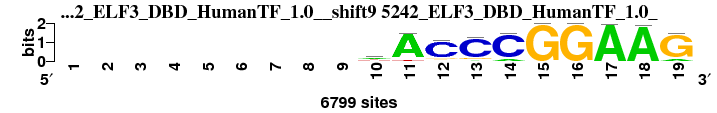 |
0.855 |
0.611 |
6.522 |
0.577 |
0.913 |
1.531 |
0.923 |
10 |
6 |
5 |
6 |
14 |
18 |
14 |
10.429 |
7 |
; positions_8nt_m5 versus 5242_ELF3_DBD_HumanTF_1.0_; m=7/37; ncol2=12; w=10; offset=2; strand=D; shift=9; score=10.4286; ---------wACCCGGAAG
; cor=0.855; Ncor=0.611; logoDP=6.522; NIcor=0.577; NsEucl=0.913; SSD=1.531; NSW=0.923; rcor=10; rNcor=6; rlogoDP=5; rNIcor=6; rNsEucl=14; rSSD=18; rNSW=14; rank_mean=10.429; match_rank=7
a 0 0 0 0 0 0 0 0 0 2574 4382 347 380 651 0 0 4575 4613 681
c 0 0 0 0 0 0 0 0 0 700 19 5633 5717 5660 2 5 2 0 48
g 0 0 0 0 0 0 0 0 0 671 40 592 560 26 6125 6131 5 0 5802
t 0 0 0 0 0 0 0 0 0 1958 385 227 5 1 0 2 1 44 0
|
| 2539_MA0275.1_JASPAR_CORE_2009__shift12 (2539_MA0275.1_JASPAR_CORE_2009_) |
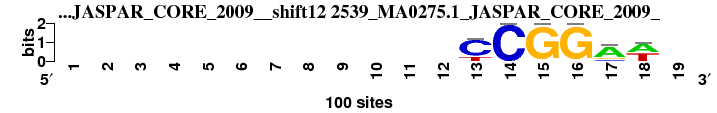 |
0.921 |
0.461 |
4.424 |
0.458 |
0.918 |
0.484 |
0.960 |
3 |
24 |
22 |
19 |
5 |
3 |
3 |
11.286 |
8 |
; positions_8nt_m5 versus 2539_MA0275.1_JASPAR_CORE_2009_; m=8/37; ncol2=6; w=6; offset=5; strand=D; shift=12; score=11.2857; ------------CCGGAw-
; cor=0.921; Ncor=0.461; logoDP=4.424; NIcor=0.458; NsEucl=0.918; SSD=0.484; NSW=0.960; rcor=3; rNcor=24; rlogoDP=22; rNIcor=19; rNsEucl=5; rSSD=3; rNSW=3; rank_mean=11.286; match_rank=8
a 0 0 0 0 0 0 0 0 0 0 0 0 0 0 0 0 72 53 0
c 0 0 0 0 0 0 0 0 0 0 0 0 76 100 0 0 11 0 0
g 0 0 0 0 0 0 0 0 0 0 0 0 0 0 100 100 16 0 0
t 0 0 0 0 0 0 0 0 0 0 0 0 24 0 0 0 0 47 0
|
| 5244_ELF4_full_HumanTF_1.0__shift9 (5244_ELF4_full_HumanTF_1.0_) |
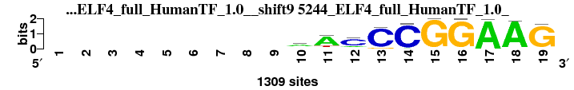 |
0.846 |
0.604 |
6.024 |
0.563 |
0.911 |
1.593 |
0.920 |
13 |
7 |
11 |
7 |
16 |
20 |
16 |
12.857 |
9 |
; positions_8nt_m5 versus 5244_ELF4_full_HumanTF_1.0_; m=9/37; ncol2=12; w=10; offset=2; strand=D; shift=9; score=12.8571; ---------aACCCGGAAG
; cor=0.846; Ncor=0.604; logoDP=6.024; NIcor=0.563; NsEucl=0.911; SSD=1.593; NSW=0.920; rcor=13; rNcor=7; rlogoDP=11; rNIcor=7; rNsEucl=16; rSSD=20; rNSW=16; rank_mean=12.857; match_rank=9
a 0 0 0 0 0 0 0 0 0 598 705 198 17 54 1 0 739 737 43
c 0 0 0 0 0 0 0 0 0 109 73 930 990 997 0 0 0 5 18
g 0 0 0 0 0 0 0 0 0 160 15 75 105 6 1226 1226 2 2 1207
t 0 0 0 0 0 0 0 0 0 192 149 106 1 0 0 2 2 4 6
|
| 7494_MECP2_f1_HOCOMOCO_v9__shift12 (7494_MECP2_f1_HOCOMOCO_v9_) |
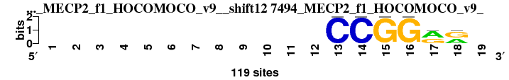 |
0.897 |
0.449 |
5.318 |
0.456 |
0.903 |
0.684 |
0.943 |
4 |
27 |
13 |
20 |
20 |
4 |
6 |
13.429 |
10 |
; positions_8nt_m5 versus 7494_MECP2_f1_HOCOMOCO_v9_; m=10/37; ncol2=6; w=6; offset=5; strand=D; shift=12; score=13.4286; ------------CCGGrr-
; cor=0.897; Ncor=0.449; logoDP=5.318; NIcor=0.456; NsEucl=0.903; SSD=0.684; NSW=0.943; rcor=4; rNcor=27; rlogoDP=13; rNIcor=20; rNsEucl=20; rSSD=4; rNSW=6; rank_mean=13.429; match_rank=10
a 0 0 0 0 0 0 0 0 0 0 0 0 0 0 0 0 68 52 0
c 0 0 0 0 0 0 0 0 0 0 0 0 119 119 0 0 0 0 0
g 0 0 0 0 0 0 0 0 0 0 0 0 0 0 119 119 50 66 0
t 0 0 0 0 0 0 0 0 0 0 0 0 0 0 0 0 1 1 0
|
| 5243_ELF3_full_HumanTF_1.0__shift9 (5243_ELF3_full_HumanTF_1.0_) |
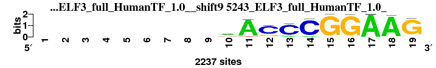 |
0.849 |
0.566 |
6.362 |
0.530 |
0.911 |
1.599 |
0.920 |
12 |
16 |
7 |
12 |
17 |
21 |
17 |
14.571 |
11 |
; positions_8nt_m5 versus 5243_ELF3_full_HumanTF_1.0_; m=11/37; ncol2=13; w=10; offset=2; strand=D; shift=9; score=14.5714; ---------wACCCGGAAG
; cor=0.849; Ncor=0.566; logoDP=6.362; NIcor=0.530; NsEucl=0.911; SSD=1.599; NSW=0.920; rcor=12; rNcor=16; rlogoDP=7; rNIcor=12; rNsEucl=17; rSSD=21; rNSW=17; rank_mean=14.571; match_rank=11
a 0 0 0 0 0 0 0 0 0 632 1131 71 153 129 3 0 1194 1201 134
c 0 0 0 0 0 0 0 0 0 163 11 1366 1389 1417 0 6 1 1 0
g 0 0 0 0 0 0 0 0 0 144 4 279 157 3 2121 2132 1 0 2092
t 0 0 0 0 0 0 0 0 0 420 83 31 0 0 0 7 0 14 11
|
| 5239_EHF_full_HumanTF_1.0__shift9 (5239_EHF_full_HumanTF_1.0_) |
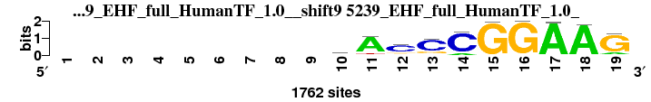 |
0.832 |
0.594 |
5.347 |
0.553 |
0.910 |
1.608 |
0.920 |
18 |
8 |
12 |
8 |
18 |
22 |
18 |
14.857 |
12 |
; positions_8nt_m5 versus 5239_EHF_full_HumanTF_1.0_; m=12/37; ncol2=12; w=10; offset=2; strand=D; shift=9; score=14.8571; ---------wACCCGGAAG
; cor=0.832; Ncor=0.594; logoDP=5.347; NIcor=0.553; NsEucl=0.910; SSD=1.608; NSW=0.920; rcor=18; rNcor=8; rlogoDP=12; rNIcor=8; rNsEucl=18; rSSD=22; rNSW=18; rank_mean=14.857; match_rank=12
a 0 0 0 0 0 0 0 0 0 461 895 171 125 166 2 0 942 942 197
c 0 0 0 0 0 0 0 0 0 175 34 1224 1280 1288 1 0 4 10 29
g 0 0 0 0 0 0 0 0 0 143 33 221 291 16 1458 1464 1 9 1329
t 0 0 0 0 0 0 0 0 0 304 121 146 8 7 0 0 2 4 13
|
| 7366_ERG_f1_HOCOMOCO_v9__shift12 (7366_ERG_f1_HOCOMOCO_v9_) |
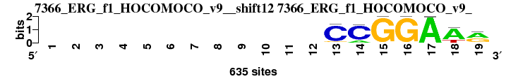 |
0.896 |
0.418 |
4.791 |
0.417 |
0.911 |
0.774 |
0.945 |
5 |
33 |
18 |
23 |
15 |
6 |
5 |
15.000 |
13 |
; positions_8nt_m5 versus 7366_ERG_f1_HOCOMOCO_v9_; m=13/37; ncol2=10; w=7; offset=5; strand=D; shift=12; score= 15; ------------CCGGAAr
; cor=0.896; Ncor=0.418; logoDP=4.791; NIcor=0.417; NsEucl=0.911; SSD=0.774; NSW=0.945; rcor=5; rNcor=33; rlogoDP=18; rNIcor=23; rNsEucl=15; rSSD=6; rNSW=5; rank_mean=15.000; match_rank=13
a 0 0 0 0 0 0 0 0 0 0 0 0 14 105 0 0 634 484 334
c 0 0 0 0 0 0 0 0 0 0 0 0 563 530 0 0 0 3 0
g 0 0 0 0 0 0 0 0 0 0 0 0 57 0 635 635 0 0 280
t 0 0 0 0 0 0 0 0 0 0 0 0 1 0 0 0 1 148 21
|
| 1889_PB0024.1_JASPAR_CORE_2009__shift6 (1889_PB0024.1_JASPAR_CORE_2009_) |
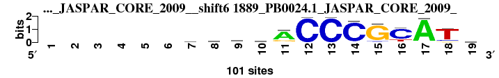 |
0.763 |
0.572 |
6.615 |
0.607 |
0.913 |
2.171 |
0.910 |
31 |
14 |
3 |
2 |
12 |
34 |
22 |
16.857 |
14 |
; positions_8nt_m5 versus 1889_PB0024.1_JASPAR_CORE_2009_; m=14/37; ncol2=16; w=12; offset=-1; strand=D; shift=6; score=16.8571; ------wmvwACCCGCATv
; cor=0.763; Ncor=0.572; logoDP=6.615; NIcor=0.607; NsEucl=0.913; SSD=2.171; NSW=0.910; rcor=31; rNcor=14; rlogoDP=3; rNIcor=2; rNsEucl=12; rSSD=34; rNSW=22; rank_mean=16.857; match_rank=14
a 0 0 0 0 0 0 25 32 31 28 73 1 1 4 2 0 98 1 25
c 0 0 0 0 0 0 21 33 28 17 3 99 99 94 6 79 0 11 31
g 0 0 0 0 0 0 18 21 33 17 21 0 0 0 90 3 1 7 25
t 0 0 0 0 0 0 36 14 9 38 2 0 0 2 2 19 1 81 19
|
| 1869_MA0421.1_JASPAR_CORE_2009__shift7 (1869_MA0421.1_JASPAR_CORE_2009_) |
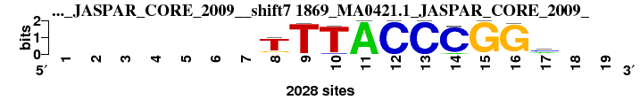 |
0.787 |
0.656 |
8.133 |
0.634 |
0.891 |
2.362 |
0.882 |
23 |
1 |
1 |
1 |
25 |
37 |
33 |
17.286 |
15 |
; positions_8nt_m5 versus 1869_MA0421.1_JASPAR_CORE_2009_; m=15/37; ncol2=10; w=10; offset=0; strand=D; shift=7; score=17.2857; -------TTTACCCGGm--
; cor=0.787; Ncor=0.656; logoDP=8.133; NIcor=0.634; NsEucl=0.891; SSD=2.362; NSW=0.882; rcor=23; rNcor=1; rlogoDP=1; rNIcor=1; rNsEucl=25; rSSD=37; rNSW=33; rank_mean=17.286; match_rank=15
a 0 0 0 0 0 0 0 174 0 0 1832 0 0 118 0 49 779 0 0
c 0 0 0 0 0 0 0 0 0 103 0 1832 1832 1739 0 0 841 0 0
g 0 0 0 0 0 0 0 274 40 0 0 0 0 0 1832 1784 117 0 0
t 0 0 0 0 0 0 0 1457 1817 1784 0 0 0 0 0 0 291 0 0
|
| 7360_ELK1_f1_HOCOMOCO_v9__shift12 (7360_ELK1_f1_HOCOMOCO_v9_) |
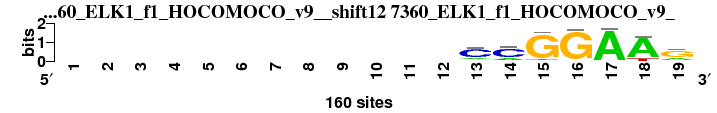 |
0.850 |
0.458 |
3.086 |
0.437 |
0.904 |
0.902 |
0.936 |
11 |
25 |
29 |
22 |
19 |
7 |
9 |
17.429 |
16 |
; positions_8nt_m5 versus 7360_ELK1_f1_HOCOMOCO_v9_; m=16/37; ncol2=8; w=7; offset=5; strand=D; shift=12; score=17.4286; ------------CCGGAAr
; cor=0.850; Ncor=0.458; logoDP=3.086; NIcor=0.437; NsEucl=0.904; SSD=0.902; NSW=0.936; rcor=11; rNcor=25; rlogoDP=29; rNIcor=22; rNsEucl=19; rSSD=7; rNSW=9; rank_mean=17.429; match_rank=16
a 0 0 0 0 0 0 0 0 0 0 0 0 27 33 3 2 153 134 42
c 0 0 0 0 0 0 0 0 0 0 0 0 112 112 0 1 1 0 15
g 0 0 0 0 0 0 0 0 0 0 0 0 16 11 147 153 0 2 100
t 0 0 0 0 0 0 0 0 0 0 0 0 5 4 10 4 6 24 3
|
| 3767_UP00070_UniPROBE_20120919__shift6 (3767_UP00070_UniPROBE_20120919_) |
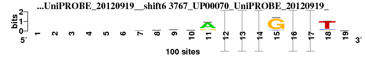 |
0.762 |
0.572 |
6.606 |
0.606 |
0.913 |
2.176 |
0.909 |
33 |
15 |
4 |
3 |
13 |
35 |
23 |
18.000 |
17 |
; positions_8nt_m5 versus 3767_UP00070_UniPROBE_20120919_; m=17/37; ncol2=16; w=12; offset=-1; strand=D; shift=6; score= 18; ------wmvwACCCGCATv
; cor=0.762; Ncor=0.572; logoDP=6.606; NIcor=0.606; NsEucl=0.913; SSD=2.176; NSW=0.909; rcor=33; rNcor=15; rlogoDP=4; rNIcor=3; rNsEucl=13; rSSD=35; rNSW=23; rank_mean=18.000; match_rank=17
a 0 0 0 0 0 0 25 32 31 28 73 0.01 0.01 0.04 2 0 0.98 1 25
c 0 0 0 0 0 0 21 33 27 17 3 0.99 0.99 0.94 6 0.79 0 11 31
g 0 0 0 0 0 0 18 21 33 17 22 0 0 0 90 0.03 0.01 7 25
t 0 0 0 0 0 0 36 14 9 38 2 0 0 0.02 2 0.19 0.01 81 19
|
| 3735_UP00038_UniPROBE_20120919__rc_shift6 (3735_UP00038_UniPROBE_20120919__rc) |
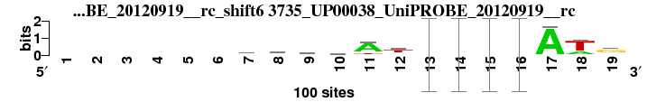 |
0.776 |
0.582 |
4.519 |
0.466 |
0.918 |
1.960 |
0.918 |
27 |
9 |
20 |
17 |
7 |
29 |
19 |
18.286 |
18 |
; positions_8nt_m5 versus 3735_UP00038_UniPROBE_20120919__rc; m=18/37; ncol2=16; w=12; offset=-1; strand=R; shift=6; score=18.2857; ------rardAtCCGGATg
; cor=0.776; Ncor=0.582; logoDP=4.519; NIcor=0.466; NsEucl=0.918; SSD=1.960; NSW=0.918; rcor=27; rNcor=9; rlogoDP=20; rNIcor=17; rNsEucl=7; rSSD=29; rNSW=19; rank_mean=18.286; match_rank=18
a 0 0 0 0 0 0 40 47 39 34 72 17 0.05 0.12 0 0 96 24 16
c 0 0 0 0 0 0 19 15 13 15 4 19 0.86 0.87 0 0.01 1 4 13
g 0 0 0 0 0 0 31 23 30 25 6 7 0.09 0.01 0.99 0.99 1 1 61
t 0 0 0 0 0 0 10 15 18 26 18 57 0 0 0.01 0.01 2 71 10
|
| 1935_PB0077.1_JASPAR_CORE_2009__rc_shift6 (1935_PB0077.1_JASPAR_CORE_2009__rc) |
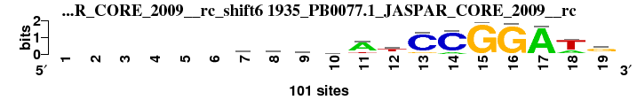 |
0.775 |
0.582 |
4.519 |
0.465 |
0.917 |
1.967 |
0.918 |
28 |
10 |
21 |
18 |
8 |
30 |
20 |
19.286 |
19 |
; positions_8nt_m5 versus 1935_PB0077.1_JASPAR_CORE_2009__rc; m=19/37; ncol2=16; w=12; offset=-1; strand=R; shift=6; score=19.2857; ------rarwAtCCGGATg
; cor=0.775; Ncor=0.582; logoDP=4.519; NIcor=0.465; NsEucl=0.917; SSD=1.967; NSW=0.918; rcor=28; rNcor=10; rlogoDP=21; rNIcor=18; rNsEucl=8; rSSD=30; rNSW=20; rank_mean=19.286; match_rank=19
a 0 0 0 0 0 0 40 47 39 34 72 17 5 12 0 0 96 24 16
c 0 0 0 0 0 0 19 15 13 16 4 19 86 87 0 1 1 4 13
g 0 0 0 0 0 0 31 23 30 25 6 7 9 1 99 99 1 1 61
t 0 0 0 0 0 0 9 15 18 26 18 57 0 0 1 1 2 71 9
|
| 7355_EHF_si_HOCOMOCO_v9__shift9 (7355_EHF_si_HOCOMOCO_v9_) |
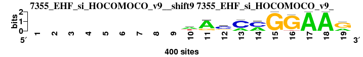 |
0.786 |
0.561 |
4.957 |
0.519 |
0.902 |
1.912 |
0.904 |
24 |
17 |
17 |
14 |
21 |
26 |
26 |
20.714 |
20 |
; positions_8nt_m5 versus 7355_EHF_si_HOCOMOCO_v9_; m=20/37; ncol2=12; w=10; offset=2; strand=D; shift=9; score=20.7143; ---------wAcMmGGAAr
; cor=0.786; Ncor=0.561; logoDP=4.957; NIcor=0.519; NsEucl=0.902; SSD=1.912; NSW=0.904; rcor=24; rNcor=17; rlogoDP=17; rNIcor=14; rNsEucl=21; rSSD=26; rNSW=26; rank_mean=20.714; match_rank=20
a 0 0 0 0 0 0 0 0 0 213 308 71 110 169 0 0 400 400 131
c 0 0 0 0 0 0 0 0 0 37 0 232 290 231 0 0 0 0 3
g 0 0 0 0 0 0 0 0 0 17 85 93 0 0 400 376 0 0 261
t 0 0 0 0 0 0 0 0 0 133 7 4 0 0 0 24 0 0 5
|
| 2601_MA0363.1_JASPAR_CORE_2009__shift7 (2601_MA0363.1_JASPAR_CORE_2009_) |
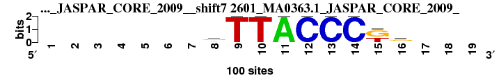 |
0.768 |
0.576 |
6.819 |
0.548 |
0.885 |
2.135 |
0.881 |
30 |
12 |
2 |
10 |
29 |
31 |
34 |
21.143 |
21 |
; positions_8nt_m5 versus 2601_MA0363.1_JASPAR_CORE_2009_; m=21/37; ncol2=9; w=9; offset=0; strand=D; shift=7; score=21.1429; -------rTTACCCkg---
; cor=0.768; Ncor=0.576; logoDP=6.819; NIcor=0.548; NsEucl=0.885; SSD=2.135; NSW=0.881; rcor=30; rNcor=12; rlogoDP=2; rNIcor=10; rNsEucl=29; rSSD=31; rNSW=34; rank_mean=21.143; match_rank=21
a 0 0 0 0 0 0 0 30 0 0 100 0 0 0 0 15 0 0 0
c 0 0 0 0 0 0 0 10 0 0 0 100 100 100 0 15 0 0 0
g 0 0 0 0 0 0 0 50 0 0 0 0 0 0 60 55 0 0 0
t 0 0 0 0 0 0 0 10 100 100 0 0 0 0 40 15 0 0 0
|
| 2487_MA0098.1_JASPAR_CORE_2009__rc_shift13 (2487_MA0098.1_JASPAR_CORE_2009__rc) |
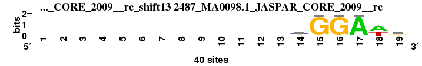 |
0.841 |
0.421 |
0.238 |
-0.094 |
0.898 |
0.750 |
0.937 |
14 |
31 |
37 |
35 |
22 |
5 |
8 |
21.714 |
22 |
; positions_8nt_m5 versus 2487_MA0098.1_JASPAR_CORE_2009__rc; m=22/37; ncol2=6; w=6; offset=6; strand=R; shift=13; score=21.7143; -------------mGGAwr
; cor=0.841; Ncor=0.421; logoDP=0.238; NIcor=-0.094; NsEucl=0.898; SSD=0.750; NSW=0.937; rcor=14; rNcor=31; rlogoDP=37; rNIcor=35; rNsEucl=22; rSSD=5; rNSW=8; rank_mean=21.714; match_rank=22
a 0 0 0 0 0 0 0 0 0 0 0 0 0 15 1 0 39 23 16
c 0 0 0 0 0 0 0 0 0 0 0 0 0 17 0 1 0 0 4
g 0 0 0 0 0 0 0 0 0 0 0 0 0 3 39 39 1 0 16
t 0 0 0 0 0 0 0 0 0 0 0 0 0 5 0 0 0 17 4
|
| 4939_Eip74EF_DrosophilaTF_1.1__shift7 (4939_Eip74EF_DrosophilaTF_1.1_) |
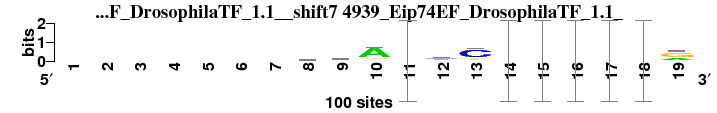 |
0.762 |
0.538 |
4.566 |
0.501 |
0.913 |
2.161 |
0.910 |
34 |
19 |
19 |
15 |
11 |
33 |
21 |
21.714 |
23 |
; positions_8nt_m5 versus 4939_Eip74EF_DrosophilaTF_1.1_; m=23/37; ncol2=17; w=12; offset=0; strand=D; shift=7; score=21.7143; -------mgAAyCMGGAAr
; cor=0.762; Ncor=0.538; logoDP=4.566; NIcor=0.501; NsEucl=0.913; SSD=2.161; NSW=0.910; rcor=34; rNcor=19; rlogoDP=19; rNIcor=15; rNsEucl=11; rSSD=33; rNSW=21; rank_mean=21.714; match_rank=23
a 0 0 0 0 0 0 0 29 21 73 0.6875 12 11 0.2941 0 0 1 1 29
c 0 0 0 0 0 0 0 36 22 7 0 41 71 0.7059 0 0 0 0 6
g 0 0 0 0 0 0 0 14 43 13 0.125 12 12 0 1 1 0 0 59
t 0 0 0 0 0 0 0 21 14 7 0.1875 35 6 0 0 0 0 0 6
|
| 2420_MA0026.1_JASPAR_CORE_2009__shift12 (2420_MA0026.1_JASPAR_CORE_2009_) |
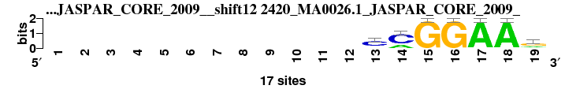 |
0.814 |
0.475 |
3.947 |
0.447 |
0.885 |
1.291 |
0.908 |
20 |
22 |
26 |
21 |
28 |
12 |
24 |
21.857 |
24 |
; positions_8nt_m5 versus 2420_MA0026.1_JASPAR_CORE_2009_; m=24/37; ncol2=7; w=7; offset=5; strand=D; shift=12; score=21.8571; ------------CMGGAAr
; cor=0.814; Ncor=0.475; logoDP=3.947; NIcor=0.447; NsEucl=0.885; SSD=1.291; NSW=0.908; rcor=20; rNcor=22; rlogoDP=26; rNIcor=21; rNsEucl=28; rSSD=12; rNSW=24; rank_mean=21.857; match_rank=24
a 0 0 0 0 0 0 0 0 0 0 0 0 2 5 0 0 17 17 5
c 0 0 0 0 0 0 0 0 0 0 0 0 12 12 0 0 0 0 1
g 0 0 0 0 0 0 0 0 0 0 0 0 2 0 17 17 0 0 10
t 0 0 0 0 0 0 0 0 0 0 0 0 1 0 0 0 0 0 1
|
| 3995_UP00305_UniPROBE_20120919__rc_shift0 (3995_UP00305_UniPROBE_20120919__rc) |
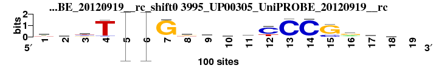 |
0.797 |
0.461 |
1.660 |
0.050 |
0.917 |
1.657 |
0.925 |
21 |
23 |
33 |
33 |
9 |
24 |
12 |
22.143 |
25 |
; positions_8nt_m5 versus 3995_UP00305_UniPROBE_20120919__rc; m=25/37; ncol2=18; w=11; offset=-7; strand=R; shift=0; score=22.1429; wkbTCCGkmsrCCCGrrw-
; cor=0.797; Ncor=0.461; logoDP=1.660; NIcor=0.050; NsEucl=0.917; SSD=1.657; NSW=0.925; rcor=21; rNcor=23; rlogoDP=33; rNIcor=33; rNsEucl=9; rSSD=24; rNSW=12; rank_mean=22.143; match_rank=25
a 41 23 3 2 0 0 4 12 27 13 44 2 1 2 1 28 42 34 0
c 8 13 29 5 0.96 0.95 1 11 42 35 16 72 94 94 20 13 16 20 0
g 16 30 28 1 0.02 0.04 93 42 8 30 26 2 1 3 78 53 25 20 0
t 35 34 40 92 0.02 0.01 2 35 23 22 14 24 4 1 1 6 17 26 0
|
| 6163_1k79_A_3D-footprint_20130124__rc_shift13 (6163_1k79_A_3D-footprint_20130124__rc) |
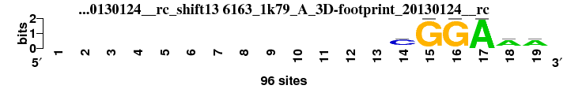 |
0.839 |
0.419 |
0.288 |
-0.128 |
0.888 |
0.906 |
0.924 |
15 |
32 |
36 |
36 |
26 |
8 |
13 |
23.714 |
26 |
; positions_8nt_m5 versus 6163_1k79_A_3D-footprint_20130124__rc; m=26/37; ncol2=6; w=6; offset=6; strand=R; shift=13; score=23.7143; -------------CGGAAA
; cor=0.839; Ncor=0.419; logoDP=0.288; NIcor=-0.128; NsEucl=0.888; SSD=0.906; NSW=0.924; rcor=15; rNcor=32; rlogoDP=36; rNIcor=36; rNsEucl=26; rSSD=8; rNSW=13; rank_mean=23.714; match_rank=26
a 0 0 0 0 0 0 0 0 0 0 0 0 0 9 0 0 96 67 67
c 0 0 0 0 0 0 0 0 0 0 0 0 0 67 0 0 0 9 11
g 0 0 0 0 0 0 0 0 0 0 0 0 0 11 96 96 0 11 9
t 0 0 0 0 0 0 0 0 0 0 0 0 0 9 0 0 0 9 9
|
| 6164_1k7a_A_3D-footprint_20130124__rc_shift13 (6164_1k7a_A_3D-footprint_20130124__rc) |
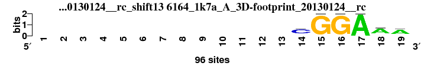 |
0.835 |
0.418 |
0.293 |
-0.129 |
0.886 |
0.932 |
0.922 |
16 |
34 |
35 |
37 |
27 |
9 |
15 |
24.714 |
27 |
; positions_8nt_m5 versus 6164_1k7a_A_3D-footprint_20130124__rc; m=27/37; ncol2=6; w=6; offset=6; strand=R; shift=13; score=24.7143; -------------CGGAAA
; cor=0.835; Ncor=0.418; logoDP=0.293; NIcor=-0.129; NsEucl=0.886; SSD=0.932; NSW=0.922; rcor=16; rNcor=34; rlogoDP=35; rNIcor=37; rNsEucl=27; rSSD=9; rNSW=15; rank_mean=24.714; match_rank=27
a 0 0 0 0 0 0 0 0 0 0 0 0 0 9 0 0 96 69 67
c 0 0 0 0 0 0 0 0 0 0 0 0 0 67 0 0 0 9 9
g 0 0 0 0 0 0 0 0 0 0 0 0 0 11 96 96 0 9 9
t 0 0 0 0 0 0 0 0 0 0 0 0 0 9 0 0 0 9 11
|
| 7373_ETS1_si_HOCOMOCO_v9__shift12 (7373_ETS1_si_HOCOMOCO_v9_) |
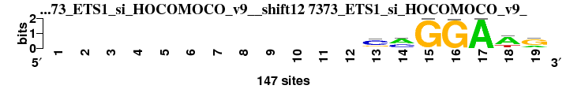 |
0.784 |
0.422 |
3.525 |
0.396 |
0.885 |
1.293 |
0.908 |
25 |
30 |
27 |
27 |
30 |
13 |
25 |
25.286 |
28 |
; positions_8nt_m5 versus 7373_ETS1_si_HOCOMOCO_v9_; m=28/37; ncol2=8; w=7; offset=5; strand=D; shift=12; score=25.2857; ------------cmGGAWg
; cor=0.784; Ncor=0.422; logoDP=3.525; NIcor=0.396; NsEucl=0.885; SSD=1.293; NSW=0.908; rcor=25; rNcor=30; rlogoDP=27; rNIcor=27; rNsEucl=30; rSSD=13; rNSW=25; rank_mean=25.286; match_rank=28
a 0 0 0 0 0 0 0 0 0 0 0 0 22 81 0 0 147 101 34
c 0 0 0 0 0 0 0 0 0 0 0 0 90 57 0 1 0 3 10
g 0 0 0 0 0 0 0 0 0 0 0 0 34 5 147 146 0 5 98
t 0 0 0 0 0 0 0 0 0 0 0 0 1 4 0 0 0 38 5
|
| 2690_PF0003.1_JASPAR_CORE_2009__shift12 (2690_PF0003.1_JASPAR_CORE_2009_) |
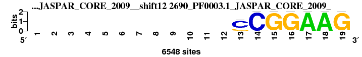 |
0.818 |
0.440 |
4.987 |
0.413 |
0.871 |
1.626 |
0.884 |
19 |
28 |
16 |
25 |
36 |
23 |
32 |
25.571 |
29 |
; positions_8nt_m5 versus 2690_PF0003.1_JASPAR_CORE_2009_; m=29/37; ncol2=8; w=7; offset=5; strand=D; shift=12; score=25.5714; ------------SCGGAAG
; cor=0.818; Ncor=0.440; logoDP=4.987; NIcor=0.413; NsEucl=0.871; SSD=1.626; NSW=0.884; rcor=19; rNcor=28; rlogoDP=16; rNIcor=25; rNsEucl=36; rSSD=23; rNSW=32; rank_mean=25.571; match_rank=29
a 0 0 0 0 0 0 0 0 0 0 0 0 0 0 0 0 6548 6548 0
c 0 0 0 0 0 0 0 0 0 0 0 0 4724 6548 0 0 0 0 0
g 0 0 0 0 0 0 0 0 0 0 0 0 1824 0 6548 6548 0 0 6548
t 0 0 0 0 0 0 0 0 0 0 0 0 0 0 0 0 0 0 0
|
| 5368_GCM2_DBD_HumanTF_1.0__rc_shift9 (5368_GCM2_DBD_HumanTF_1.0__rc) |
 |
0.753 |
0.627 |
2.654 |
0.276 |
0.897 |
2.141 |
0.893 |
36 |
2 |
31 |
29 |
23 |
32 |
29 |
26.000 |
30 |
; positions_8nt_m5 versus 5368_GCM2_DBD_HumanTF_1.0__rc; m=30/37; ncol2=10; w=10; offset=2; strand=R; shift=9; score= 26; ---------yrCCCGCATv
; cor=0.753; Ncor=0.627; logoDP=2.654; NIcor=0.276; NsEucl=0.897; SSD=2.141; NSW=0.893; rcor=36; rNcor=2; rlogoDP=31; rNIcor=29; rNsEucl=23; rSSD=32; rNSW=29; rank_mean=26.000; match_rank=30
a 0 0 0 0 0 0 0 0 0 240 1320 0 13 66 127 0 1320 45 427
c 0 0 0 0 0 0 0 0 0 341 91 1320 1320 1320 138 1320 24 299 375
g 0 0 0 0 0 0 0 0 0 140 533 0 0 1 1320 32 41 77 340
t 0 0 0 0 0 0 0 0 0 599 92 1 0 51 84 263 23 1320 179
|
| 5365_GCM1_DBD_HumanTF_1.0__rc_shift9 (5365_GCM1_DBD_HumanTF_1.0__rc) |
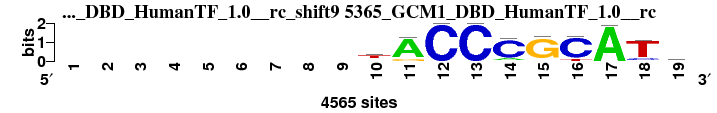 |
0.752 |
0.627 |
2.703 |
0.265 |
0.893 |
2.285 |
0.886 |
37 |
3 |
30 |
30 |
24 |
36 |
31 |
27.286 |
31 |
; positions_8nt_m5 versus 5365_GCM1_DBD_HumanTF_1.0__rc; m=31/37; ncol2=10; w=10; offset=2; strand=R; shift=9; score=27.2857; ---------tACCCGCATr
; cor=0.752; Ncor=0.627; logoDP=2.703; NIcor=0.265; NsEucl=0.893; SSD=2.285; NSW=0.886; rcor=37; rNcor=3; rlogoDP=30; rNIcor=30; rNsEucl=24; rSSD=36; rNSW=31; rank_mean=27.286; match_rank=31
a 0 0 0 0 0 0 0 0 0 568 2590 0 1 478 100 2 2590 57 766
c 0 0 0 0 0 0 0 0 0 915 15 2590 2590 2590 127 2590 11 413 623
g 0 0 0 0 0 0 0 0 0 492 491 1 0 4 2590 26 3 99 879
t 0 0 0 0 0 0 0 0 0 2590 30 2 0 94 107 442 6 2590 322
|
| 2614_MA0380.1_JASPAR_CORE_2009__rc_shift11 (2614_MA0380.1_JASPAR_CORE_2009__rc) |
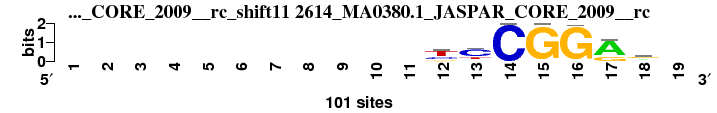 |
0.776 |
0.453 |
2.226 |
0.151 |
0.878 |
1.470 |
0.895 |
26 |
26 |
32 |
32 |
33 |
16 |
27 |
27.429 |
32 |
; positions_8nt_m5 versus 2614_MA0380.1_JASPAR_CORE_2009__rc; m=32/37; ncol2=7; w=7; offset=4; strand=R; shift=11; score=27.4286; -----------ycCGGRr-
; cor=0.776; Ncor=0.453; logoDP=2.226; NIcor=0.151; NsEucl=0.878; SSD=1.470; NSW=0.895; rcor=26; rNcor=26; rlogoDP=32; rNIcor=32; rNsEucl=33; rSSD=16; rNSW=27; rank_mean=27.429; match_rank=32
a 0 0 0 0 0 0 0 0 0 0 0 0 14 0 0 1 73 32 0
c 0 0 0 0 0 0 0 0 0 0 0 25 63 100 0 0 0 13 0
g 0 0 0 0 0 0 0 0 0 0 0 16 0 0 100 99 27 48 0
t 0 0 0 0 0 0 0 0 0 0 0 57 23 0 0 0 0 8 0
|
| 4969_gcm_DrosophilaTF_1.1__rc_shift10 (4969_gcm_DrosophilaTF_1.1__rc) |
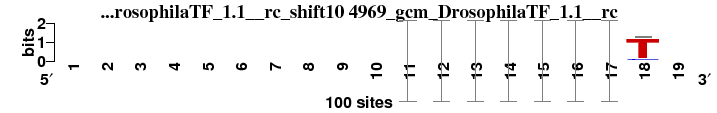 |
0.788 |
0.525 |
3.378 |
0.245 |
0.878 |
1.918 |
0.880 |
22 |
20 |
28 |
31 |
32 |
27 |
35 |
27.857 |
33 |
; positions_8nt_m5 versus 4969_gcm_DrosophilaTF_1.1__rc; m=33/37; ncol2=8; w=8; offset=3; strand=R; shift=10; score=27.8571; ----------rCCCGCAT-
; cor=0.788; Ncor=0.525; logoDP=3.378; NIcor=0.245; NsEucl=0.878; SSD=1.918; NSW=0.880; rcor=22; rNcor=20; rlogoDP=28; rNIcor=31; rNsEucl=32; rSSD=27; rNSW=35; rank_mean=27.857; match_rank=33
a 0 0 0 0 0 0 0 0 0 0 0.6774 0 0 0.1042 0 0.0208 1 2 0
c 0 0 0 0 0 0 0 0 0 0 0 0.9792 1 0.875 0.0208 0.9167 0 9 0
g 0 0 0 0 0 0 0 0 0 0 0.3226 0 0 0 0.9792 0 0 2 0
t 0 0 0 0 0 0 0 0 0 0 0 0.0208 0 0.0208 0 0.0625 0 87 0
|
| 5356_GABPA_full_HumanTF_1.0__shift11 (5356_GABPA_full_HumanTF_1.0_) |
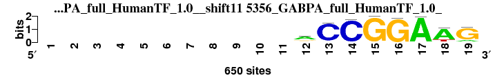 |
0.762 |
0.436 |
5.246 |
0.416 |
0.877 |
1.943 |
0.879 |
32 |
29 |
15 |
24 |
34 |
28 |
36 |
28.286 |
34 |
; positions_8nt_m5 versus 5356_GABPA_full_HumanTF_1.0_; m=34/37; ncol2=10; w=8; offset=4; strand=D; shift=11; score=28.2857; -----------aCCGGAAG
; cor=0.762; Ncor=0.436; logoDP=5.246; NIcor=0.416; NsEucl=0.877; SSD=1.943; NSW=0.879; rcor=32; rNcor=29; rlogoDP=15; rNIcor=24; rNsEucl=34; rSSD=28; rNSW=36; rank_mean=28.286; match_rank=34
a 0 0 0 0 0 0 0 0 0 0 0 386 13 15 0 0 386 386 74
c 0 0 0 0 0 0 0 0 0 0 0 96 386 386 0 2 2 1 16
g 0 0 0 0 0 0 0 0 0 0 0 138 17 0 386 386 0 14 386
t 0 0 0 0 0 0 0 0 0 0 0 30 3 1 0 4 0 92 0
|
| 2649_MA0430.1_JASPAR_CORE_2009__shift12 (2649_MA0430.1_JASPAR_CORE_2009_) |
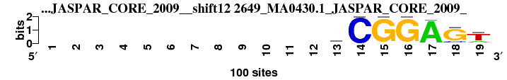 |
0.771 |
0.415 |
4.167 |
0.400 |
0.875 |
1.541 |
0.890 |
29 |
36 |
24 |
26 |
35 |
19 |
30 |
28.429 |
35 |
; positions_8nt_m5 versus 2649_MA0430.1_JASPAR_CORE_2009_; m=35/37; ncol2=8; w=7; offset=5; strand=D; shift=12; score=28.4286; ------------yCGGAGT
; cor=0.771; Ncor=0.415; logoDP=4.167; NIcor=0.400; NsEucl=0.875; SSD=1.541; NSW=0.890; rcor=29; rNcor=36; rlogoDP=24; rNIcor=26; rNsEucl=35; rSSD=19; rNSW=30; rank_mean=28.429; match_rank=35
a 0 0 0 0 0 0 0 0 0 0 0 0 13 0 0 0 96 4 23
c 0 0 0 0 0 0 0 0 0 0 0 0 42 100 0 0 0 14 2
g 0 0 0 0 0 0 0 0 0 0 0 0 13 0 100 100 4 82 5
t 0 0 0 0 0 0 0 0 0 0 0 0 31 0 0 0 0 0 70
|
| 7361_ELK3_f1_HOCOMOCO_v9__shift11 (7361_ELK3_f1_HOCOMOCO_v9_) |
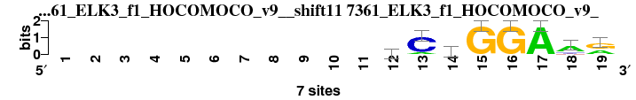 |
0.756 |
0.403 |
4.254 |
0.373 |
0.885 |
1.698 |
0.894 |
35 |
37 |
23 |
28 |
31 |
25 |
28 |
29.571 |
36 |
; positions_8nt_m5 versus 7361_ELK3_f1_HOCOMOCO_v9_; m=36/37; ncol2=11; w=8; offset=4; strand=D; shift=11; score=29.5714; -----------mChGGAAr
; cor=0.756; Ncor=0.403; logoDP=4.254; NIcor=0.373; NsEucl=0.885; SSD=1.698; NSW=0.894; rcor=35; rNcor=37; rlogoDP=23; rNIcor=28; rNsEucl=31; rSSD=25; rNSW=28; rank_mean=29.571; match_rank=36
a 0 0 0 0 0 0 0 0 0 0 0 2 1 3 0 0 7 5 3
c 0 0 0 0 0 0 0 0 0 0 0 3 6 2 0 0 0 1 0
g 0 0 0 0 0 0 0 0 0 0 0 1 0 0 7 7 0 0 4
t 0 0 0 0 0 0 0 0 0 0 0 1 0 2 0 0 0 1 0
|
| 6730_4b06_A_3D-footprint_20130124__rc_shift13 (6730_4b06_A_3D-footprint_20130124__rc) |
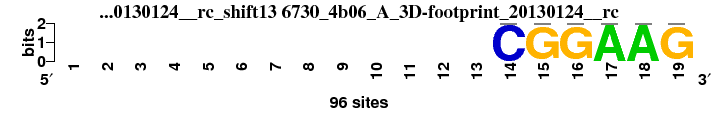 |
0.835 |
0.417 |
1.421 |
0.018 |
0.856 |
1.483 |
0.876 |
17 |
35 |
34 |
34 |
37 |
17 |
37 |
30.143 |
37 |
; positions_8nt_m5 versus 6730_4b06_A_3D-footprint_20130124__rc; m=37/37; ncol2=6; w=6; offset=6; strand=R; shift=13; score=30.1429; -------------CGGAAG
; cor=0.835; Ncor=0.417; logoDP=1.421; NIcor=0.018; NsEucl=0.856; SSD=1.483; NSW=0.876; rcor=17; rNcor=35; rlogoDP=34; rNIcor=34; rNsEucl=37; rSSD=17; rNSW=37; rank_mean=30.143; match_rank=37
a 0 0 0 0 0 0 0 0 0 0 0 0 0 0 0 0 96 96 0
c 0 0 0 0 0 0 0 0 0 0 0 0 0 96 0 0 0 0 0
g 0 0 0 0 0 0 0 0 0 0 0 0 0 0 96 96 0 0 96
t 0 0 0 0 0 0 0 0 0 0 0 0 0 0 0 0 0 0 0
|
{kind=link}
{kind=link}
{kind=link}
{kind=link}
{kind=link}
{kind=link}
{kind=link}
{kind=link}
{kind=link}
{kind=link}
{kind=link}
{kind=link}
{kind=link}
{kind=link}
{kind=link}
{kind=link}
{kind=link}
{kind=link}
{kind=link}
{kind=link}
{kind=link}
{kind=link}
{kind=link}
{kind=link}
{kind=link}
{kind=link}
{kind=link}
{kind=link}
{kind=link}
{kind=link}
{kind=link}
{kind=link}
{kind=link}
{kind=link}
{kind=link}
{kind=link}
{kind=link}